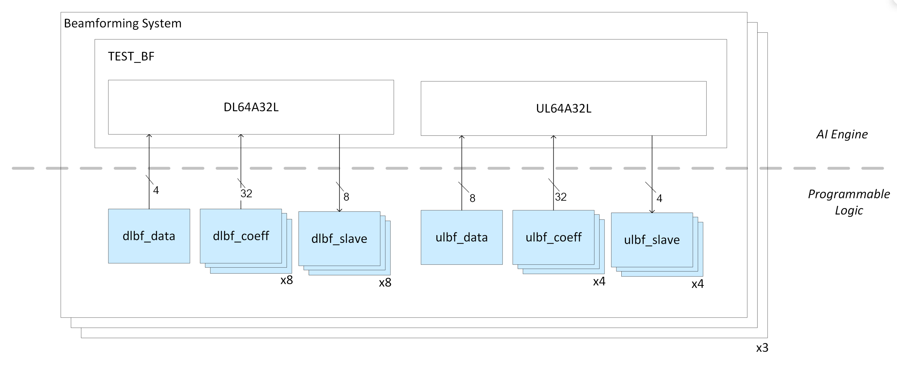
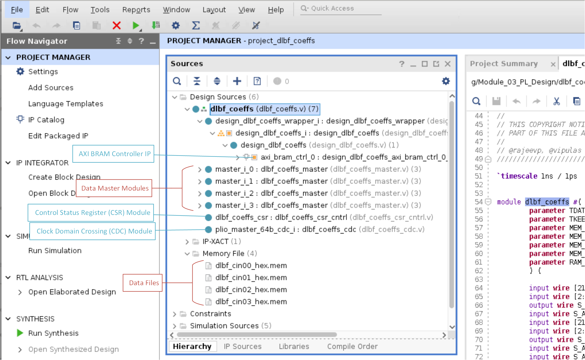
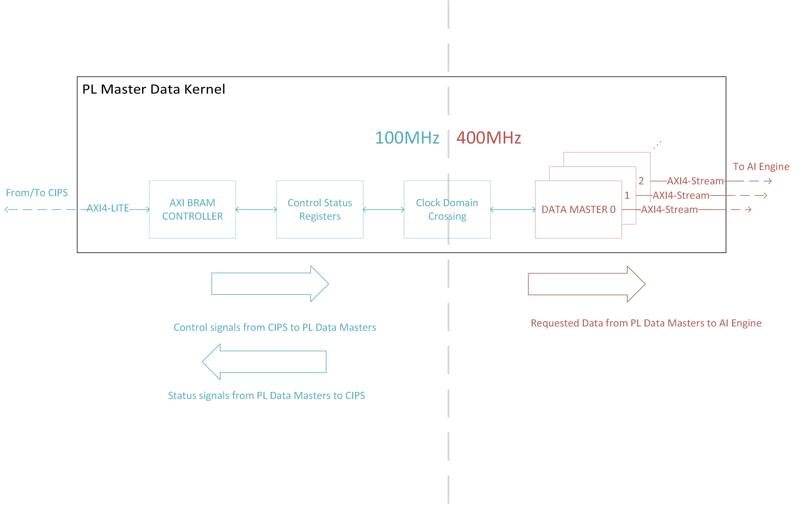
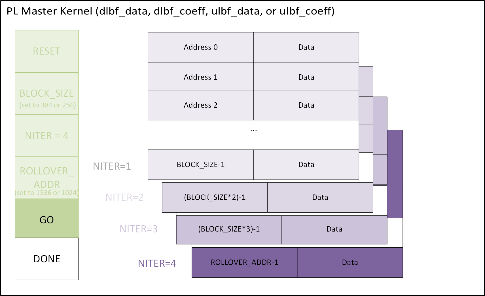
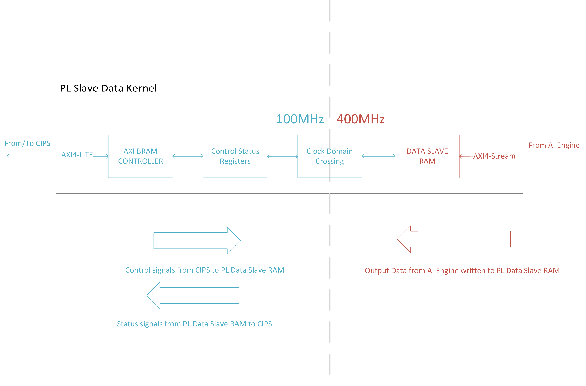

AI Engine DevelopmentSee Vitis™ Development Environment on xilinx.com See Vitis-AI™ Development Environment on xilinx.com |
Building the Design¶
The next step is to build the PL kernels (XO files). This design requires the creation of seven different RTL PL kernels. Run the following commands to build all of them.
make kernels
or
cd dlbf_data
vivado -mode batch -source run_dlbf_data.tcl -tclargs NO_SIM xcvc1902-vsva2197-2MP-e-S
cd ../dlbf_coeffs
vivado -mode batch -source run_dlbf_coeffs.tcl -tclargs NO_SIM xcvc1902-vsva2197-2MP-e-S
cd ../dlbf_slave
vivado -mode batch -source run_dlbf_slave.tcl -tclargs NO_SIM xcvc1902-vsva2197-2MP-e-S
cd ../ulbf_data
vivado -mode batch -source run_ulbf_data.tcl -tclargs NO_SIM xcvc1902-vsva2197-2MP-e-S
cd ../ulbf_coeffs
vivado -mode batch -source run_ulbf_coeffs.tcl -tclargs NO_SIM xcvc1902-vsva2197-2MP-e-S
cd ../ulbf_slave
vivado -mode batch -source run_ulbf_slave.tcl -tclargs NO_SIM xcvc1902-vsva2197-2MP-e-S
cd ../axi4s_regslice_64b
vivado -mode batch -source run_axi4s_regslice_64b.tcl -tclargs NO_SIM xcvc1902-vsva2197-2MP-e-S
The above make command creates the xilinx object files (XO) for PL kernels used in the design (highlighted in blue below).

Dependencies¶
Each PL kernel has run_<kernel_name>.tcl, bd_<kernel_name>.tcl, kernel_<kernel_name>.xml, and hdl/*.v RTL code as dependencies.
| Filename | Description |
|---|---|
| bd_\<kernel_name>.tcl | The Tcl script that creates the block design in the Vivado project. |
| kernel_\<kernel_name>.xml | The XML file that specifies the ports and defines the PL kernel. |
The hdl/ folder in each PL kernel folder contains the Verilog RTL that is used to create the PL kernels.
PL Master Kernels¶
The PL Master kernels are the dlbf_data, dlbf_coeffs, ulbf_data, and ulbf_coeffs kernels. The RTL for these kernels consists of the following modules:
| Filename | Description |
|---|---|
| hdl/\<kernel_name>.v | PL Kernel Top-Level Module: Contains a design_\<kernel_name>_wrapper, multiple data master modules (four for DLBF or eight for ULBF), a control status register module, and a clock domain crossing module. |
| hdl/\<kernel_name>_cdc.v | Clock Domain Crossing Module: Converts 100 MHz control signals from the PS to 400 MHz signals to communicate with data master modules. Converts 400 MHz status/data signals from data master modules to 100 MHz signals to send to the PS. |
| hdl/\<kernel_name>_cntrl.v | Control Module: Used to read the status registers of the data master modules. |
| hdl/\<kernel_name>_csr_cntrl.v | Control Status Register Module: Defines the control/status register mapping of the PL kernel. |
| hdl/\<kernel_name>_ram2axis_64b.v | RAM to AXI4-Stream Module: Communicates with the XPM RAM module to read data using the AXI4-Stream protocol. This module instantiates the XPM RAM module which contains a BRAM instance. |
| hdl/\<kernel_name>_xpm_ram.v | XPM RAM Module: BRAM instance used to store the input data. |
| hdl/\<kernel_name>_xpm_sync_fifo.v | XPM Sync FIFO Module: A FIFO between the XPM RAM module and AI Engine. It stores the input data from XPM RAM module before sending it to AI Engine. It stores 32 words total. Each word is 64 bits. |
| hdl/\<kernel_name>_master.v | Data Master Module: Contains a control module, a RAM to AXI4-Stream module, and an XPM sync FIFO module. |
PL Slave Kernels¶
The PL Slave kernels are the dlbf_slave and ulbf_slave kernels. The RTL for these kernels consists of the following modules:
| Filename | Description |
|---|---|
| hdl/\<kernel_name>.v | PL Kernel Top-Level Module: Contains a clock domain crossing module, a control module, and a RAM module. |
| hdl/\<kernel_name>_cdc.v | Clock Domain Crossing Module: Clock domain crossing module. Converts 100 MHz control signals from the PS to 400 MHz signals to communicate with the RAM module. Converts 400 MHz status/data signals from the RAM module to 100 MHz signals to send to the PS. |
| hdl/\<kernel_name>_cntrl.v | Control Status Register Module: Defines the control/status register mapping of the PL kernel. |
| hdl/\<kernel_name>_ram.v | RAM Module: URAM instance used to store the output data from AI Engine. |
Build Products¶
Each PL kernel results in the following build products:
| Filename | Description |
|---|---|
| \<kernel_name>.xo | The Xilinx Object file in which the PL kernel is packaged. |
| \<kernel_name> directory | Directory containing the Vivado project for the PL kernel. |
PL Kernels: Master and Slaves¶
Now that you have an AI Engine application, the next step is to find a way to send the input data and store the output data on hardware. This is accomplished by creating PL master kernels that store the input data in block RAM and feed it to the AI Engine. Reference inputs are used in this design to mimic data flow that would come from a radio antenna. PL slave kernels, which receive AI Engine output data and store it into URAM resources, must also be created.
PL Master Kernels¶
The PL master kernels are the dlbf_data, dlbf_coeff, ulbf_data, and ulbf_coeff kernels. A dlbf_data PL kernel stores the reference input data matrices for the downlink subgraph in the AI Engine graph. The dlbf_coeff PL kernel stores the reference input coefficients for the downlink subgraph. The ulbf_data PL kernel stores the input data for the uplink subgraph. The ulbf_coeff stores the input coefficient data for the uplink subgraph.
Open the Vivado projects for these PL kernels and review their source code. They are all composed of the same modules: a AXI BRAM Controller IP, a control status register (CSR) module, a clock domain crossing (CDC) module, and multiple data master modules. The data master modules are initialized with the reference input data and input coefficients from *_hex.mem files in the data/ folder.

The *_hex.memfiles were generated by a python script that converted the decimal data in the *.txt files to hexidecimal data. An example conversion is shown below:
#Decimal data in dlbf_cin00.txt
-1893 3687 -6157 -1324
#Hexidecimal conversion in dlbf_cin00_hex.mem
fad4e7f30e67f89b
Where rightmost decimal data (-1893) is converted to leftmost hexidecimal data (f89b).
Below is a block diagram of how data in the PL Master kernels is requested by CIPS and sent out to the AI Engine.

Each PL master kernel hooks up to one of the 16 AXI4-Lite PL interfaces on the custom platform built in Module 01 (Creating a Custom Platform). Through this connection, the CIPS block can send AXI control signals to the data master modules and receive AXI status signals from the data master modules.
AXI BRAM Controller: The AXI BRAM controller writes the control signals to the CSR module and reads the status signals from the CSR module at 100 MHz.
Control Status Register (CSR) Module: The CSR module is a register interface that the AXI BRAM controller accesses to access the data masters. Below is the control and status register map for one data master module.
Control and Status Register Address Map
| Register Space Offset | Bits and Name | R/W? | Description |
|---|---|---|---|
| 0x0 | [31:0] ID | R | 32 bit ID register. |
| 0x4 | [0] RESET | W | 1: assert, 0: deassert. Also assigned to the m_axis_rst_bram input in the CSR module. |
| 0x4 | [4] GO | W | 1: start PL traffic, 0: stop PL traffic. Also assigned to the go_bram input in the CSR module. |
| 0x8 | [11:0] BLOCK_SIZE | W | Sets the block size of stream frame. Block size is the number of 64-bit TDATA packets to send to the AI Engine. TLAST is asserted for every |
| 0xC | [11:0] NITER | W | Sets the number of iterations of the data to go through. The number of iterations is the number of |
| 0x10 | [15:0] ROLLOVER_ADDR | W | When BRAM addresses reach this rollover address, it will reset to address 0. In this design, the rollover address is set to the address of four |
| 0x20 | [0] MASTER_DONE | R | When this status register becomes 1'b, the data master is done sending data to AI Engine. Also assigned to the m0_done_bram input in the CSR module. |
The CSR Module RTL definitions are located here:
dlbf_data/hdl/ulbf_data_csr_cntrl.v
dlbf_coeffs/hdl/dlbf_coeffs_csr_cntrl.v
ulbf_data/hdl/ulbf_data_csr_cntrl.v
ulbf_coeffs/hdl/ulbf_coeffs_csr_cntrl.v
Clock Domain Crossing (CDC) Module: The control and status signals sent to the CSR module sync up with the data master modules through a clock domain crossing (CDC) module. It converts the 100 MHz control and status signals from CIPS to 400 MHz signals. The data master modules operate at 400 MHz. It also works the other way as well (converting 400 MHz signals from the data master modules to 100 MHz signals for CIPS).
Data Master Modules: These modules contain BRAM instances that store the input data that is sent to the AI Engine. They are initialized by
data/*_hex.memfiles with input data. There are four data master modules in thedlbf_dataanddlbf_coeffsPL kernels. There are eight data master modules in theulbf_dataandulbf_coeffsPL kernels.
PL Master Execution Flow¶
Through the control path (highlighted in blue in the block diagram above), CIPS block requests data from specific addresses to be sent from the data master modules to the AI Engine. The data master modules then send out the data at the requested address through an AXI4-Stream interface to the AI Engine. The AI Engine receives its downlink input data matrices, downlink input coefficient data, uplink input data matrices, and uplink input coefficient data this way. The PL masters must follow a certain execution flow to function properly.
Reset¶
First, the PL masters must be reset by asserting their RESET bits to 1’b1 and then deasserting them to 0’b1.
Configuration¶
The PL masters must then have their BLOCK_SIZE, NITER, and ROLLOVER_ADDR registers configured.
BLOCK_SIZE¶
The value you set the BLOCK_SIZE register to is determined by the number of 32-bit complex data samples you send to the AI Engine. Because the PL interface to the AI Engine is 64 bit, you can fit two 32-bit complex data samples in a single data packet. The BLOCK_SIZE register for each PL master kernel is as follows:
| PL Kernels | AI Engine Window Size (Bytes) | Number of 32-Bit Complex Data Samples | Number of 64-Bit Data Packets (BLOCK_SIZE) |
|---|---|---|---|
| dlbf_data ulbf_data | 3072 | 768 | 384 |
| dlbf_coeffs ulbf_coeffs | 2048 | 512 | 256 |
NITER and ROLLOVER_ADDR¶
The value of the NITER register determines the number BLOCK_SIZE chunks of input data to send of the AI Engine. Because there is a finite amount of BRAM resources, it is not possible to store a large amount of unique input data. A design choice has been made to store four BLOCK_SIZE chunks of unique data in the PL masters.
When NITER <=4, up to four unique BLOCK_SIZE chunks of data are sent to the AI Engine.
When NITER > 4, the BRAMs send the four unique BLOCK_SIZE chunks of data, then the BRAM addresses roll over to address 0, and they start sending the same data again.
The NITER register allows you to continuously feed the AI Engine graph input data for any NITER number of data chunks without using an high number of BRAMs.
The ROLLOVER_ADDR register contains the address that tells the BRAMs when to restart (or roll over) to address 0. The ROLLOVER_ADDR is calculated as the BLOCK_SIZE * 4. Four is the number of unique BLOCK_SIZE chunks of input data the PL masters store.
For example, to test the AI Engine graph on a variety of data inputs, set NITER to 4. This configures the PL kernels to send four <BLOCK_SIZE> chunks of unique input data to the AI Engine. To test performance, you can then set NITER to 100, which sends the same four chunks of input data to the AI Engine 25 times (for a total of 25*4 = 100 iterations). You can then average the throughput across the iterations to give a valid performance measurement. The following is a table of the rollover addresses:
| PL Kernels | BLOCK_SIZE | ROLLOVER_ADDR |
|---|---|---|
| dlbf_data ulbf_data | 384 | 1536 |
| dlbf_coeffs ulbf_coeffs | 256 | 1024 |
Start¶
After configuration, the PL master kernels are ready to send the data stored in their BRAMs to the AI Engine. When the GO bit is asserted, the PL traffic to the AI Engine starts. Deasserting the GO bit stops PL traffic to the AI Engine.

Done¶
When the PL Master kernels have sent a BLOCK_SIZE number TDATA packets to the AI Engine for NITER number of times, then then they assert their MASTER_DONE bits.
IP Kernelization¶
Take a look at the package_xo command, which can be found in the last line of run_*.tcl.
package_xo -kernel_name ${IP_NAME} -ctrl_protocol user_managed -ip_directory [pwd]/../${IP_REPO}/${IP_NAME} -xo_path [pwd]/../${IP_REPO}/${IP_NAME}.xo -force -output_kernel_xml [pwd]/kernel_${IP_NAME}_auto.xml
First, the IP is created. The steps can be seen in run_*.tcl until update_ip_catalog. The packaged IP is then taken from the IP directory and provided to the package_xo command using the -kernel_name keyword. When the package_xo command kernelizes the IP, it outputs the ${IP_NAME}.xo in the path provided by the -xo_path. The -xo_path cannot be the same as the -ip_directory path. The argument -force overwrites if there is a pre-existing XO file. The intermediate metadata file is generated by this command and is stored as kernel_${IP_NAME}_auto.xml.
More information can be found in this tutorial.
PL Slave Kernels¶
The PL slave kernels are the dlbf_slave and the ulbf_slave kernels. These kernels store the output data generated from the AI Engine application. Open the Vivado projects for the PL kernels and review their source code.

AXI BRAM Controller: The AXI BRAM Controller writes the control signals to the CSR module and reads the status signals from the CSR module at 100MHz.
CSR Module: The CSR module is a register interface that the AXI BRAM Controller accesses to access the Slave RAM. Below is the control and status register map for one data master module.
Control and Status Register Address Map
| Register Space Offset | Bits and Name | R/W? | Description |
|---|---|---|---|
| 0x0 | [31:0] ID | R | 32-bit ID Register. |
| 0x4 | [0] RESET | W | 1:assert, 0:de-assert. Also assigned to the slave_rst_bram input in CSR module. |
| 0xC | [11:0] NITER | W | Sets the number of iterations of the data to receive. The number of iterations is the number of |
| 0x20 | [0] SLAVE_DONE | R | When this status register is 1'b, the RAM slave is done receiving data to AI Engine. Also assigned to the rxdone_bram input in the CSR module. |
CDC Module: The control and status signals sent to the CSR module sync up with the slave RAM module through a clock domain crossing (CDC) module. It converts the 100 MHz control and status signals from CIPS to 400 MHz signals. The slave RAM module operate at 400 MHz. It also works the other way as well (converting 400 MHz signals from the slave RAM modules to 100 MHz signals to send to the CIPS).
Data Slave RAM Module: Contains the URAM instance that stores the output data produced by the AI Engine. There is one slave RAM module in the
dlbf_slaveandulbf_slavePL kernels.
PL Slave Execution Flow¶
The control path (highlighted in blue in the preceding block diagram) is the same as the one in the PL master kernels; however, the CSR module syncs with a data slave RAM module. The AI Engine writes its output data to a data slave RAM module through an AXI4-Stream interface. The AI Engine application writes its output data from downlink and uplink subgraphs to the dlbf_slave and ulbf_slave PL kernels this way. The PL slaves must follow a certain execution flow to function properly.
Reset¶
Just like the PL masters, the PL slaves must first be reset by asserting their RESET bits to 1’b1 and then deasserting them to 0’b1.
Configuration¶
The PL slaves must then have their BLOCK_SIZE, NITER, and ROLLOVER_ADDR registers configured.
BLOCK_SIZE¶
Although there is no explicit BLOCK_SIZE register, PL slave kernels do receive <BLOCK_SIZE> chunks of data from the AI Engine as follows:
| PL Kernels | AI Engine Window Size (bytes) | Number of 32-Bit Complex Data Samples (BLOCK_SIZE) |
|---|---|---|
| dlbf_slave | 3072 | 768 |
| ulbf_slave | 3072 | 768 |
NITER and ROLLOVER_ADDR¶
The NITER register tells the PL slave kernel how many <BLOCK_SIZE> chunks of data to expect and store in their URAMs.
The PL slave kernels do not have a ROLLOVER_ADDR register because the aim is to keep all of the output data for functional verification. Data starts to be overwritten when NITER > 4.
Start¶
The PL slave kernels are slaves to the AI Engine because the AI Engine writes output data to them. Because the PL kernels must wait until the AI Engine fills their URAMs, there is no GO bit on the PL slave kernels.
Done¶
When the PL slave kernels have received the <BLOCK_SIZE> amount of data for NITER number of times, they assert their SLAVE_DONE bits.
AXI4-Stream Register Slice¶
The AXI4-Stream Register Slice IP (axi_register_slice) is available in the IP Catalog. It is a flip-flop that is used to pipeline paths. It is used during timing closure (see Module 04).
Beamforming Design: Downlink AI Engine Graph¶
Each downlink AI Engine graph has four input data ports, 32 input coefficient ports, and eight output ports. A dlbf_data PL kernel has four AXI4-Stream output ports to that plug into the four input data ports of the downlink AI Engine graph. A dlbf_coeffs PL kernel has four AXI4-Stream output ports. So, eight dlbf_coeffs PL kernels are required to plug into the 4*8=32 input coefficient ports. A dlbf_slave PL kernel has one AXI4-Stream input port. So, eight dlbf_slave PL kernels are required to plug into the eight output ports.
Remember, our system instantiates three downlink graphs, so the total number of DLBF PL kernels becomes: three dlbf_data, 24 dlbf_coeffs, and 24 dlbfs_slave PL kernels.
Beamforming Design: Uplink AI Engine Graph¶
Each uplink AI Engine graph has eight input data ports, 32 input coefficient ports, and four output ports. A ulbf_data PL kernel has eight AXI4-Stream output ports that plug into the eight input data ports of the uplink AI Engine graph. A ulbf_coeffs PL kernel has eight AXI4-Stream output ports. So, four ulbf_coeffs PL kernels are required to plug into the 8*4=32 input coefficient ports. A ulbf_slave PL kernel has one AXI4-Stream input port. So, four ulbf_slave PL kernels are required to plug into the four output ports.
Remember, our system instantiates three uplink graphs, so the total number of ULBF PL kernels becomes: three ulbf_data, 12 ulbf_coeffs, and 12 ulbf_slaves.
References¶
Vitis Application Acceleration Development Flow Documentation, Developing Applications, RTL Kernels - This is a reference on how to create your own custom RTL kernels. Please note that the PL kernels in this design do not completely adhere to the recommended guidelines.
Support¶
GitHub issues will be used for tracking requests and bugs. For questions go to forums.xilinx.com.
License¶
Licensed under the Apache License, Version 2.0 (the “License”); you may not use this file except in compliance with the License.
You may obtain a copy of the License at http://www.apache.org/licenses/LICENSE-2.0
Unless required by applicable law or agreed to in writing, software distributed under the License is distributed on an “AS IS” BASIS, WITHOUT WARRANTIES OR CONDITIONS OF ANY KIND, either express or implied. See the License for the specific language governing permissions and limitations under the License.
XD016 | © Copyright 2021 Xilinx, Inc.